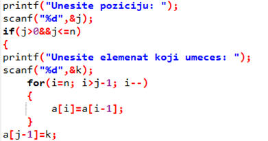
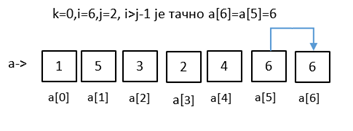
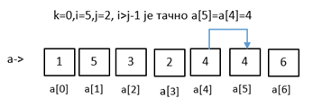
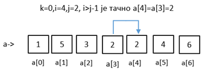
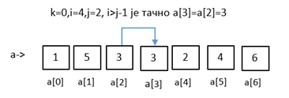
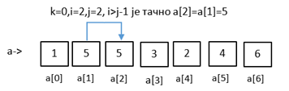
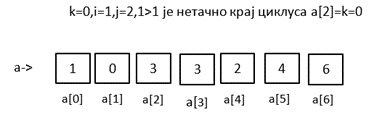

Проширивање (експандовање) низа¶
Проширивање представљање уметање нових чланова низа на жељеној позицији.
{kind=link}
Задатак: Иницијализујте један низ од шест целобројних елемената a[6]={1,5,3,2,4,6}. Проширите га додавањем једног елемента на позицији 2 (на индекс 1) . На основу циклуса написати програм
#include <stdio.h>
main()
{
int a[6]={1,5,3,2,4,6},i,j,k;
printf("\nUneti niz:\n");
for(i=0;i<6;i++)
{
printf("a[%d]=%d\n",i,a[i]);
}
printf("Unesite poziciju: ");
scanf("%d",&j);
printf("Unesite elemenat koji umeces: ");
scanf("%d",&k);
for(i=6; i>j-1; i--)
{
a[i]=a[i-1];
}
a[j-1]=k;
printf("\nProsireni niz izgleda izgleda :\n");
for(i=0;i<7;i++)
{
printf("a[%d]=%d\n",i,a[i]);
}
}
Излаз:
Uneti niz:
a[0]=1
a[1]=5
a[2]=3
a[3]=2
a[4]=4
a[5]=6
Unesite poziciju: 2
Unesite elemenat koji umeces: 0
Prosireni niz izgleda izgleda :
a[0]=1
a[1]=0
a[2]=5
a[3]=3
a[4]=2
a[5]=4
a[6]=6
Хајде да анализирамо шта се налази у циклусу. Унели смо да се додаје елемент k = 0 на позицији j=2.
     {kind=link}
{kind=link}
{kind=link}
{kind=link}
{kind=link}
{kind=link}
Видимо да је на позицију 2 односно индекс 1 унет елемент који смо желели да убацимо у низ.
Домаћи: Написати програм којим се уноси n елемената целобројног низа, затим врши додавање жељеног елемента на одређеној позицији. Предвидети да уколико се унесе позиција која је ван опсега низа испише поруку „ Позиција мора бити већа од нуле и мања од броја елемената низа”. Уколико је све у реду исписати проширени низ.
Решење:
#include <stdio.h>
main()
{
int i,j,a[50],n,k;
printf("Unesi koliko elemenata niza unosis ");
scanf("%d",&n);
printf ("Unesi %d elemenata niza: \n",n);
for (i=0; i<n; i++)
{
printf ("a[%d]=",i);
scanf ("%d",&a[i]);
}
printf("Unesite poziciju: ");
scanf("%d",&j);
if(j>=0&&j<=n)
{
printf("Unesite elemenat koji umeces: ");
scanf("%d",&k);
for(i=n; i>j-1; i--)
{
a[i]=a[i-1];
}
a[j-1]=k;
printf("\nProsireni niz izgleda izgleda :\n");
for(i=0;i<n+1;i++)
{
printf("a[%d]=%d\n",i,a[i]);
}
}
else
printf("Pozicija mora biti veca od nule i manja od broja elemenata niza");
}
Ако је унета позиција у опсегу добија се на излазу:
Unesi koliko elemenata niza unosis 5
Unesi 5 elemenata niza:
a[0]=1
a[1]=2
a[2]=3
a[3]=4
a[4]=5
Unesite poziciju: 5
Unesite elemenat koji umeces: 3
Prosireni niz izgleda izgleda :
a[0]=1
a[1]=2
a[2]=3
a[3]=4
a[4]=3
a[5]=5
Ако унета позиција није у опсегу добија се на излазу:
Unesi koliko elemenata niza unosis 5
Unesi 5 elemenata niza:
a[0]=1
a[1]=2
a[2]=3
a[3]=4
a[4]=5
Unesite poziciju: 0
Pozicija mora biti veca od nule i manja od broja elemenata niza
Шта смо научили. Решите квиз.
Дата је декларација променљивих и део програмског кода:
int i, n, a[100], p;
p=0;
for(i=n-1;i>=0;j--) p+=a[i];

Шта ради for циклус са елементима низа а.
Сортира низ а од n елемената у растућем редоследу
Сабира елементе низа а од n елемената
Инвертује (обрће) елементе низа а од n елемената
Одређује број позитивних елемената низ а од n елемената
Ротира елементе низа а од n елемената за једно место у десно
У програмском језику С, декларисан је и иницијализован низ целих бројева:
int а[7] = {50, 100, 150, 200, 300, 252, 350, 400,450};
Низ се претражује методом бинарне претраге. Тражена вредност је 300. Одредити број приступа низу (број покушаја) потребних да се пронађе тражена вредност.
Два
Три
Пет
Низ се не може претражити бинарном методом
У програмском језику Ц, декларисан је и иницијализован низ целих бројева:
int а[7] = {100, 150, 200, 252, 300, 350, 400};
Низ се претражује методом бинарне претраге. Тражена вредност је 300. Одредити број приступа низу (број покушаја) потребних да се пронађе тражена вредност.
Два
Три
Пет
Седам
Дата је декларација променљивих и део програмског кода:
int i, j, n, а[100], t;
i=0;
j=n-1;
while(i<j){ t=а[i]; а[i]=а[j]; а[j]=t; i++; j--}
Након извршења while циклуса низ а је преуређен. Проценити шта ради овај циклус.
Сортира низ а од n елемената у растућем редоследу
Сортира низ а од n елемената у опадајућем редоследу
Инвертује (обрће) елементе низа а од n елемената
Ротира низ а од n елемената за једно место у лево
Ротира елементе низа а од n елемената за једно место у десно
Анализирати дати код:
for(i=1;i<n;i++) {
t=a[i];
j=i-1;
while(j>=0 && a[j]>t) a[j+1]=a[j--];
a[j+1]=t;
}
Oд понуђених одговора изабрати ком алгоритму сортирања дати код припада:
метода избора (selection sort)
метода замене суседа (boubble sort)
метода уметања (insertion sort)
На Петљи можете решавати задатке из Методичке збирке задатака из основа програмирања део „Једнодимензионалне колекције података” који се налазе на линку Metodicka zbirka zadataka кристећи он лајн С или С/С++ компајлер. За почетак пробајте да решите задатак из збирке који се налази на линку Najniza temperatura.